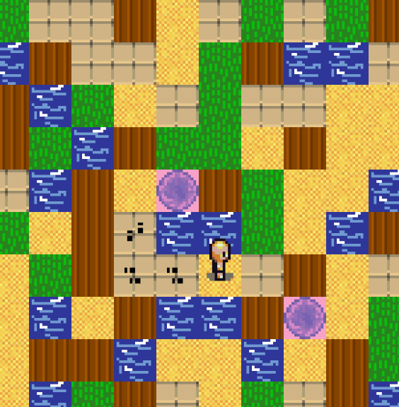
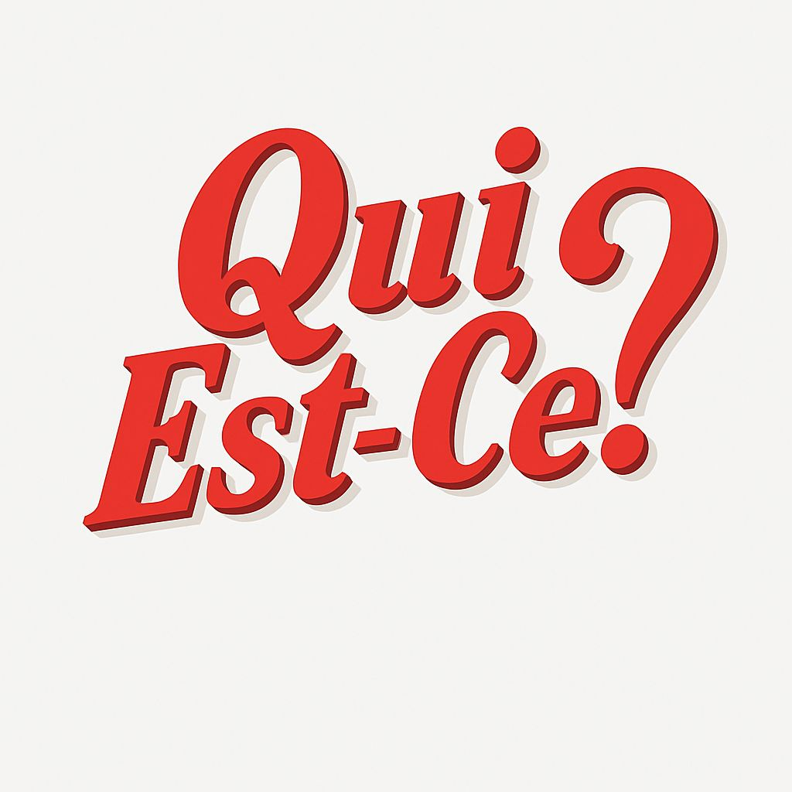
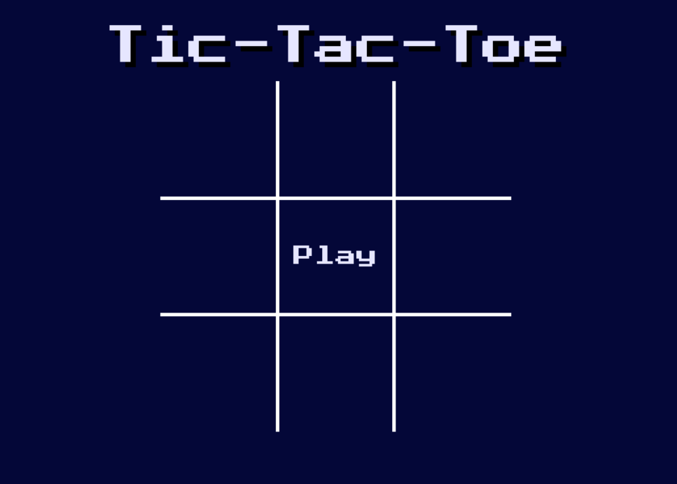

• Janvier 2020 | Stage d'observation à Defintel-informatique à Châteaubriant
En janvier 2020, j'ai fait un stage d'observation d'une semaine au sein d'une entreprise de réparation d'appareils numériques telles que des imprimantes ou des ordinateurs. Durant ce stage j'ai notamment pu apprendre les bases de la réparation d'une imprimante

Projet d'un jeu 2D utilisant la bibliothèque Ebiten et exploitant les quadtrees, une structure de données en forme d'arbre où chaque noeud qui n'est pas une feuille possède 4 noeuds enfants.
Langage utilisé : Go
Projet où on devait implémenter des algorithmes de backtracking utilisés pour résoudre des grilles de Sudoku + Analyse de la satisfiabilité des formules en Forme Normale Conjonctive
Langage utilisé : Python
Création d'un site érgonomique sur le jeu mobile "Pokemon TCG Pocket"
Langages utilisés : HTML / CSS / JavaScript

Développement d'une application cliente du jeu "Qui Est-Ce ? en Kotlin avec JavaFX. Le projet avait pour objectif de créer une application qui respectait le patron architectural MVC (Modèle-Vue-Controleur)
Langages et outils utilisés : Kotlin, JavaFX, architecture MVC

Développement d'un jeu "Morpion" avec la bibliothèque Pygame
Langage utilisé : Python (Pygame)